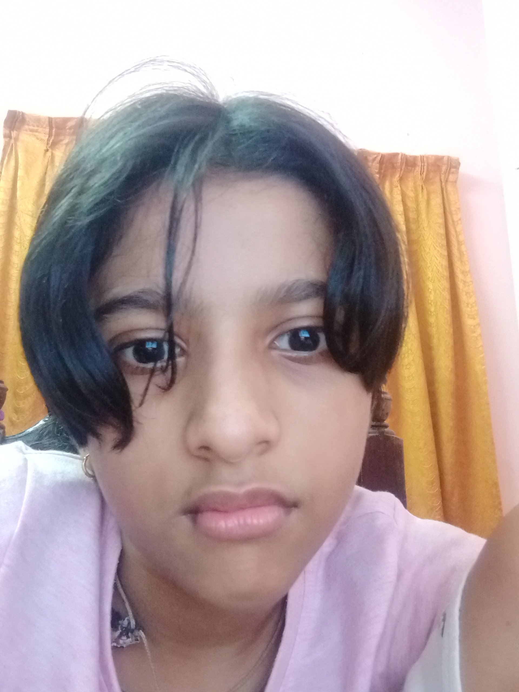

places must visit

Munnar
I had visited in Dec 2015
Munnar, IPA: [muːn̪ːɐːr], is a town and hill station on Western Ghats mountain ranges located in the Idukki district of the southwestern Indian state of Kerala. Munnar is situated at around 1,600 metres (5,200 ft) above mean sea level,[3] in the Western Ghats mountain range. Munnar is also called the "Kashmir of South India" and is a popular honeymoon destination.
my favourite mlp ponies
-
Sunny Starscout
Sunny is a curious, adventurous, and idealistic pony determined to make the world a better place. She always stands up for what she believes and loves roller skating into new adventures. Her dream is to bring all magic and harmony back to Equestria, and make sure it stays. Sunny is an apricot orange Earth pony with maroon hooves and off-white orange socks on all hooves. Her mane is magenta-and-purple and is tied back in a braid with aquamarine elastics. Her tail has no braiding and is of average length. She has emerald green eyes and dark magenta eyebrows. As an alicorn, her wings and horn are both golden yellow and appear to be made of magic, and she now has rainbow hair streaks. Her cutie mark is of a pink star with a blue trail. There are two smaller stars on the anterior side of the large one. She sometimes wears a blue sack which features Twilight Sparkle's embossed cutie mark on one side. Its strap features pins of Twilight's, Fluttershy's and Rainbow Dash's cutie marks on it.
-
Derpy (muffins)
Derpy, also known as Muffins and Ditzy Doo, is a female Pegasus pony who was given the name Derpy Hooves by the show's internet following due to her cross-eyed "derpy" expression in the first episode. The name has since been adopted by the crew and Hasbro. Starting with Feeling Pinkie Keen, the show's crew began giving the pony crossed eyes intentionally and later gave her "Where's Waldo" type cameo appearances as a nod to the fans. The character is addressed by Rainbow Dash in The Last Roundup as Derpy, where she speaks for the first time. The scene was later altered so Rainbow no longer names Derpy, in addition to her voice being altered and eyes being less crossed. She is called Bubbly Mare or Party Filly, among various others, in some merchandise, and she is called Lazy Fan in some other media. She shares her design with Sunshower Raindrops.
List of books
The Twits
Diary of a Wimpy Kid- A long haul

Thea Sisters-The Journey To Atlantis
Thea Sisters-The Journey To Atlantis
The book, ‘The Journey to Atlantis’ is a compilation of the adventures of Thea Stilton, sister of Geronimo Stilton. First released in October 2012, this book is the seventh book belonging to the special edition series. The readers will find the book very gripping and interesting as they will be able to experience the mystery themselves and solve it as and how the story proceeds, just like the Thea sisters did.
The book, ‘The Journey to Atlantis’ describes the journey of five mice who set on a voyage in the ocean. It was when Paulina was basking in the beach in the vicinity of the Mouseford Academy, that her attention is drawn to a very charming yet mysterious boy with a blue tinted skin. The boy was at the shore. The Thea sisters proceeded towards the boy in an attempt to talk to him. However, the unfamiliar language that he spoke in left all of them startled and they were all curious to know more about him. With no delay, they contacted Thea Stilton. Curious and excited herself, Thea arrives at the location and collects her mouselings and begins her new adventure; to try as hard as she can to find the whereabouts of the blue skinned boy.
BEST BUY LINK
Matilda
